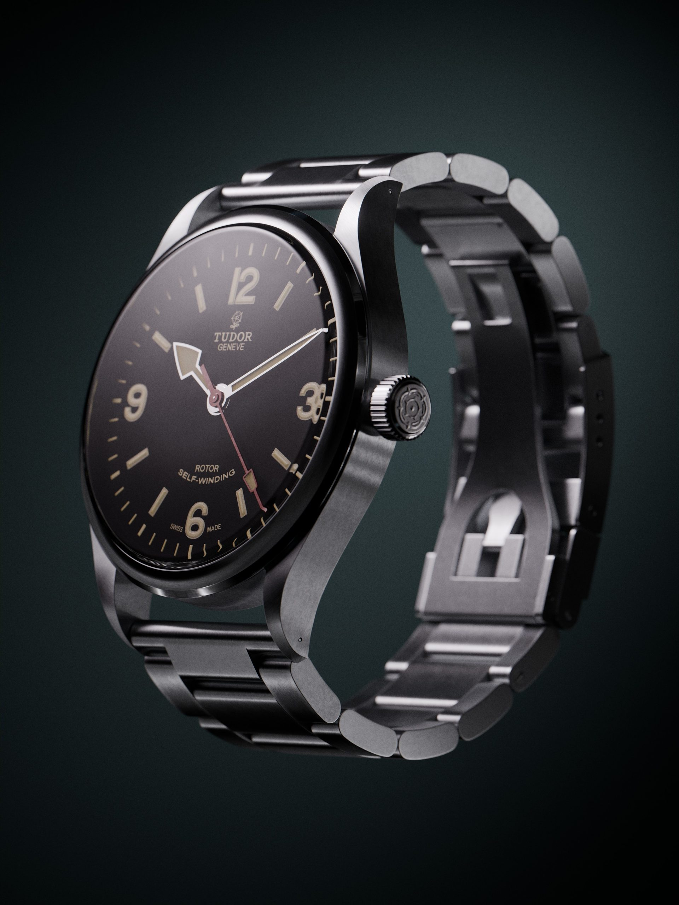

Tudor Heritage Ranger 2014
Après de nombreuses années à travailler pour le secteur de l'industrie horlogère de luxe à Genève sous des accords de confidentialité stricts, j'ai décidé de travailler sur un projet personnel en remodélisant précisément le modèle Héritage Ranger de la marque suisse Tudor pour valoriser mon savoir-faire dans ce secteur.


Mon objectif sur ce projet était d'obtenir une fidélité maximale au modèle original tout en mettant en valeur la qualité des finitions et la robustesse de la montre. Le projet a également été l'occasion de developper un Rig spécifique et suffisament robuste pour gérer une courte animation de présentation.